- 問題ID : 22215 システム起動のカスタマイズ
- 履歴
正解
mask
解説
systemctlコマンドの書式は以下のとおりです。
systemctl サブコマンド [ユニット名|定義ファイル名]
ユニットに関わる主なsystemctlサブコマンドは以下のとおりです。
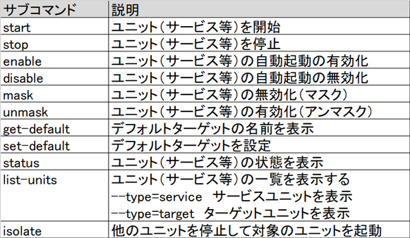
以上より、正解は
・mask
です。
以下にユニットの無効化（マスク）・有効化（アンマスク）の例を示します。
まずはsystemctl mask（無効化）の実行例です。
systemctl
maskは「/etc/systemd/system」（ユニット、ターゲットの定義ファイルを置くディレクトリ）に、サービスから「/dev
/null」（nullデバイス）へのシンボリックリンクを作成します。ユニットの定義ファイルは「/etc/systemd/system」が最初に参
照されるので、こうすることで、ユニットの存在をマスクします（隠します）。
マスクした後は、systemctl disableの時は行える手動でのサービス起動もできなくなります。
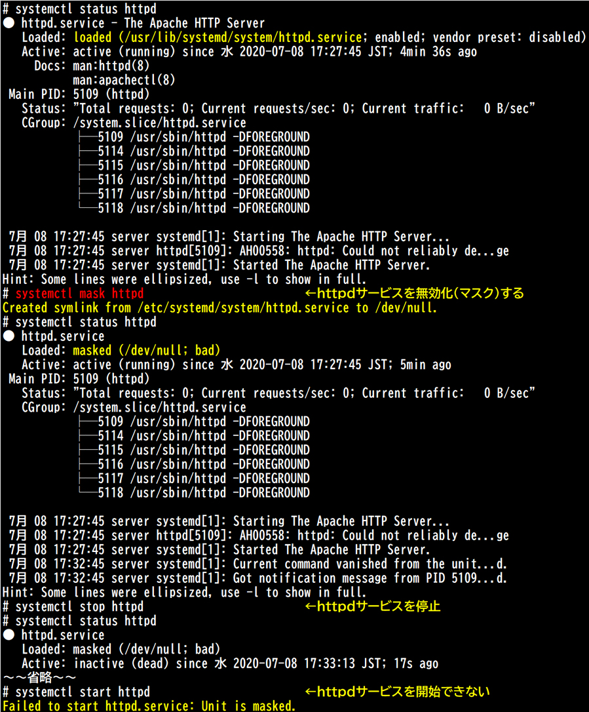
以下はsystemctl unmask（有効化）の実行例です。
unmask
は「/etc/systemd/system」の「/dev/null」へのシンボリックリンクを削除し、サービスを有効化します。「/usr/lib
/systemd/system」（永続的なユニット、ターゲットの定義ファイルを置くディレクトリ）が参照されるようになり、サービス起動ができるよう
になります。
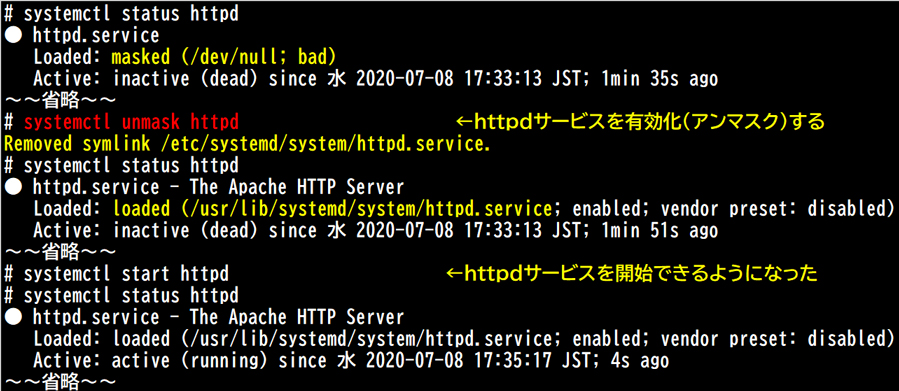
なお、「/etc/systemd/system」にユニット定義ファイルを作成している場合はこれらの操作はできません。
その他の選択肢については以下のとおりです。
・disable
上表より、自動起動を無効にするサブコマンドなので誤りです。また、disableで自動起動を無効化した場合も、手動でサービスを起動できます。
・stop
上表より、ユニットを停止するサブコマンドなので誤りです。
・unmask
上表より、ユニットを有効化するサブコマンドなので誤りです。
・off
このようなサブコマンドはありません。
参考
【systemctl】
systemdにおいて、主要な管理コマンドに「systemctl」コマンドがあります。
systemctlコマンドは非常に広範囲をカバーするコマンドで、systemdの処理単位であるユニットや、ユニットの集合体であるターゲットの操作から、OS全体にかかわる操作（OSの再起動や緊急モードの実行など）まで、様々な用途に用いられます。
ここでは、例として、ユニットの基本的な制御、ランレベルに相当するターゲットの変更等について言及します。
systemdにおいて、サービスは、ユニットとして制御されます。ユニットは、所定の位置に配置された定義ファイルで定義され、依存関係などを基に動作が決定されます。通常、ユニットの定義ファイル名はユニット名と同じです。
コマンドの書式は以下のとおりです。
systemctl サブコマンド [ユニット名|定義ファイル名]
ユニットに関わる主なsystemctlサブコマンドは以下のとおりです。
以下は、コマンドの実行例です。dkms.service（Dynamic Kernel Modoule Support）の状態を確認しています。
※拡張子を省略すると、「.service」として扱われます。
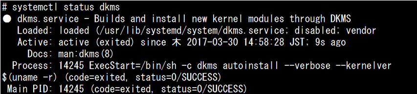
次の例は、httpd.serviceの自動起動が解除（disabled）されているのを確認した後、システムの起動時にサービスが自動起動（enable)するように設定しています。
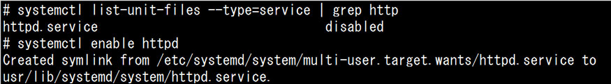
また、ターゲットはユニットの集合体ですので、ユニットに対するコマンドが同じように使える場合もあります。
以下は、「systemctl status」コマンドで、ターゲットである「default.target」の状態を表示させた例です。
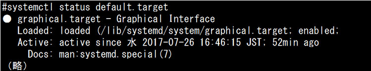
systemdでは、システムが起動する際、デフォルトでは「default.target」というターゲットが起動されます。これはSysVinitでのデフォルトのランレベルに相当します。
以下は、各ランレベルとそれに相当するターゲットを対比したものです。
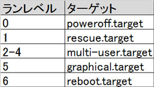
「default.target」
は、正確にはターゲットそのものではなく、デフォルトのランレベルとするターゲットのシンボリックリンクになっています。上記の例では
「default.target」はランレベル5に相当する「graphical.target」のシンボリックリンクとなっているため、
「systemctl status default.target」で「graphical.target」の状態が表示されています。
以下の例では、現在の「default.target」の内容を確認し、デフォルトで起動するターゲットを「graphical.target」から「multi-user.target」へと変更しています。シンボリックリンクが削除され、再度作成されています。
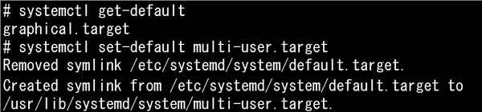
「systemctl isolate」コマンドは、引数にターゲット名をとり、そのターゲット以外のユニット、ターゲットを停止し、指定したターゲットを実行します。
こうした動作から、事実上ランレベルの変更（SysVinitにおける「init」コマンドに相当）と同等な使用方法に用いられるコマンドです。
以下は、起動中の「graphical.target」（default.target）から即座に「multi-user.target」に変更した例です。
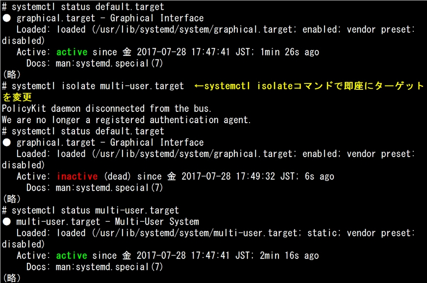
なお、ランレベル1やランレベル6に該当する「rescue.target」や「poweroff.target」などの、システム全体の起動・停止に関わるターゲットへの移行は、isolateサブコマンドとは別に、以下のサブコマンドが用意されています。
システム全体の起動・停止に関わるサブコマンドは以下のとおりです。
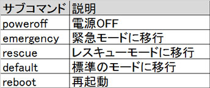
例えばレスキューモードに移行する場合、「systemctl rescue」とします。
これは「systemctl isolate rescue.target」とほぼ同じですが、特段のオプションを指定しない場合、ローカルシステムの全てのユーザーに警告メッセージが送信される点が異なります。
以下は「systemctl rescue」コマンド実行後に切り替わる画面です。
rootユーザのパスワードを入力してログインしてから、「systemctl status」コマンドを実行しています。
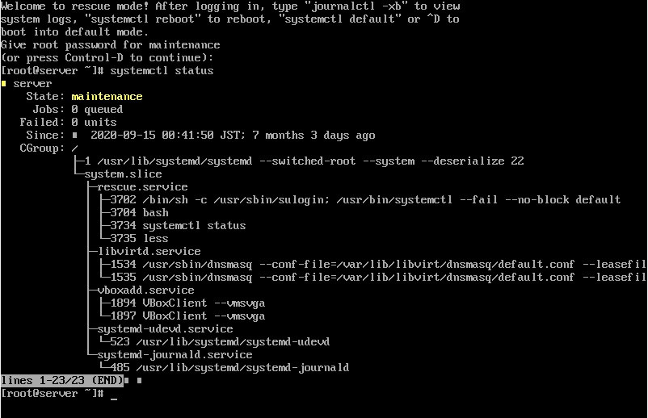
なお、レスキュー（rescure）モードはSysVinitにおけるシングルユーザーモードに該当しますが、緊急（emergency）モードはより最小限の環境を提供し、レスキューモードでも起動できないような時にシステムの修復を試みるためのモードです。
root ファイルシステムのみを読み込み専用でマウントし、他のローカルファイルシステムのマウントは実行しません。ネットワークは使用せず、必須サービスのみを起動します。